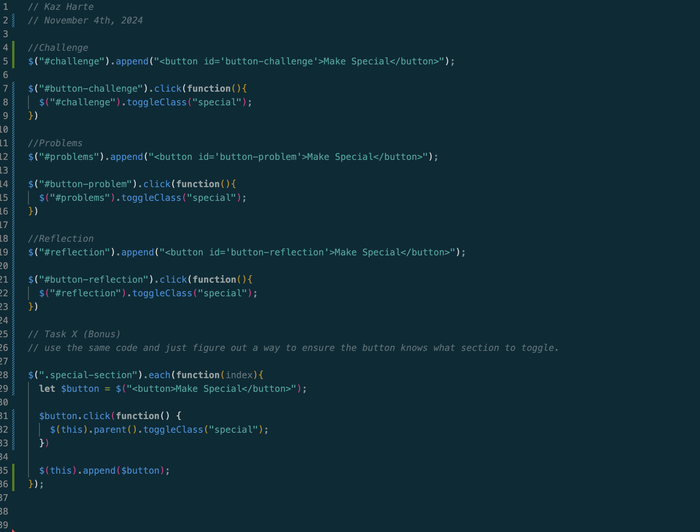

Lab 9 - Libraries & jQuery
Challenge:
Work with jQuery and make buttons for your website!
Problems:
When I initially created the button for Lab 9 I faced the issue of my button appearing twice in the same section. This was quickly fixed as it was a problem I faced in a earlier lab, in which I called the js file twice accidentally. It seems that this problem is mostly caused by reusing the template I was given for our labs, but its really no problem as long as I remember to stay detail oriented. For the first time I also completed an X task. While doing so I encountered a silly issue. I couldn't quite get my button to work or show up on all my divisions, but I fixed the issue once I realized that I forgot to start using class instead of id. Whoops!
Reflection:
I enjoyed working on this lab! Nothings better than a button that does something. I did miss the lecture on jQuery, so a lot of this material was new to me, however I've learnt that code isn't that hard to pick up (with a lot of guidance from canvas...). After finishing the main assignment, I tried out an X task for the first time and had a lot of fun doing so. I appreciate the opportunity to take the lab to the next level and gain a deeper understanding of the lab content.
Results:
______________________________________________________________________________________________________
js code